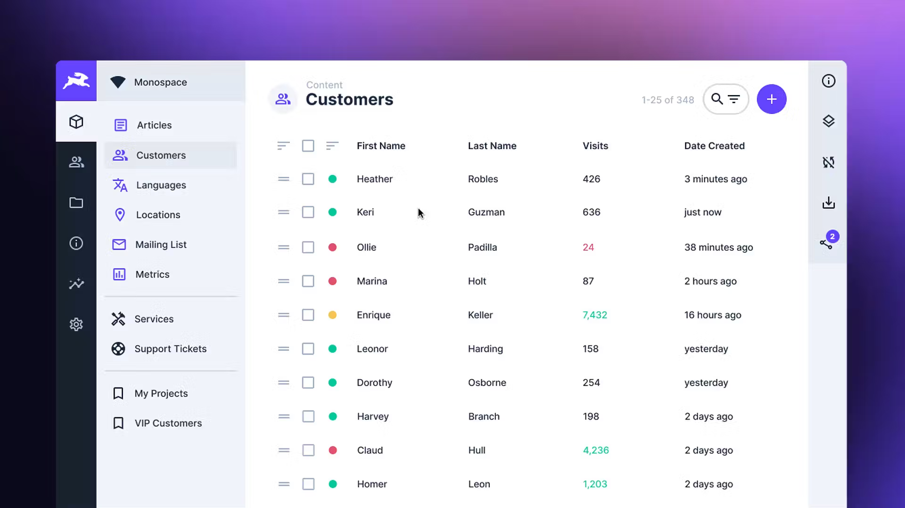

Datos sincronizados
Pedidos, productos, listas, inventario y estados viajan con reglas consistentes.
SyncMaster conecta pedidos, productos, precios, stock, estados y documentos entre marketplaces, operadores logísticos y tu ERP, con reglas, reintentos y trazabilidad.
La integración deja de ser una serie de tareas aisladas y se convierte en un flujo monitoreado.
Pedidos, productos, listas, inventario y estados viajan con reglas consistentes.
Registro, alertas y reintentos para actuar sobre excepciones sin perder operaciones.
Nuevos canales, operadores o ERP pueden incorporarse sin rehacer todo el circuito.


Mercado Libre, portales propios y otros canales comerciales.
TOTVS Protheus, Tango, Odoo y sistemas con APIs o interfaces disponibles.
Andreani, estados de envío, etiquetas, facturación y comprobantes.
Contanos origen, destino, volumen y dónde aparece hoy la intervención manual.